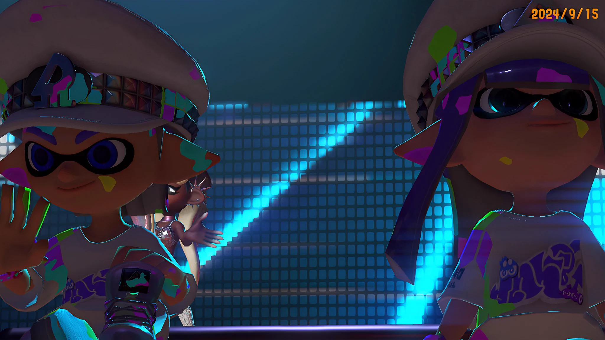

ふたりで遊んだ時間も、大切な思い出。
Games
Every game holds a little memory of us.
♡
OUR LITTLE WORLD
Game Collection
ふたりの冒険を、ひとつずつ大切に。

ふたりで遊んだ時間も、大切な思い出。
Every game holds a little memory of us.
OUR LITTLE WORLD
ふたりの冒険を、ひとつずつ大切に。